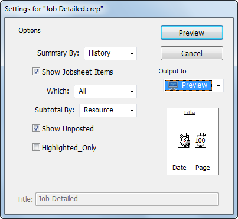

MoneyWorks Manual
Job Reports
MoneyWorks comes with a number of reports and forms that allow you to monitor the costs and progress of a job. Even better, if you don’t like our reports, and experience shows that everyone has different job reporting requirements, you can use the report writer to design your own.
The Detailed Job History report is used to provide a definitive summary of a job. To print this:
- Choose Show>Jobs or press Ctrl-4/⌘-4
The job list will be displayed. To print the report for a job (or a number of jobs), simply highlight the job(s) in the list and choose the report in the sidebar.
In this case we wish to report on the Widget Farm job, which is still active.
- Click on the Active sidebar tab to display the list of active jobs, and highlight the Widget Farm job by clicking on it once.
- Click on Detailed Job Summary in the Reports section of the list sidebar
The settings for the report will be displayed.

- Set the settings to those displayed above

- Click on the page setup button and set the report orientation to landscape
- The Job history report will be displayed
This provides a complete summary of the job, in this case organised by resources used. It includes details of the quantity used, their cost and recovery, and the amount remaining to recover. It also includes a list of any unposted disbursements against the job, so you can see additional charges that have not yet been finalised.
Job Analysis Reports
A number of job analysis reports are also provided with MoneyWorks, and you can access these through the choosing the appropriate one from the Job Reports item in the Reports menu. However (and perhaps more importantly, as job requirements vary so much from organisation to organisation), you can create your own analysis reports1. For example, you might want a report on who has worked on what job, or what are the actual resources used on a job as compared to the budgeted resources.
Job Forms
Using the Forms Designer, you can also create your own job forms to help record and retrieve information about a job. A number of job forms have been provided for you: the Job Bag Form for example will print off an empty time sheet for the job, whereas the Job Work Statement will print off a form that itemises and summarises the time and disbursements against the job.
To print a job form:
- Highlight the job(s) for which the form is to be printed in the job list
- Choose Command>Print Job Form
The Print Job Form will be displayed.

- Choose the form to print from the Use Form pop-up menu. In this case use the Job Work Statement form.
- Click Print (or preview)
A form will be printed for each job highlighted in the list.
1 For details on analysis reports, see Analysis Reports. A tutorial on creating analysis reports starts here. ↩